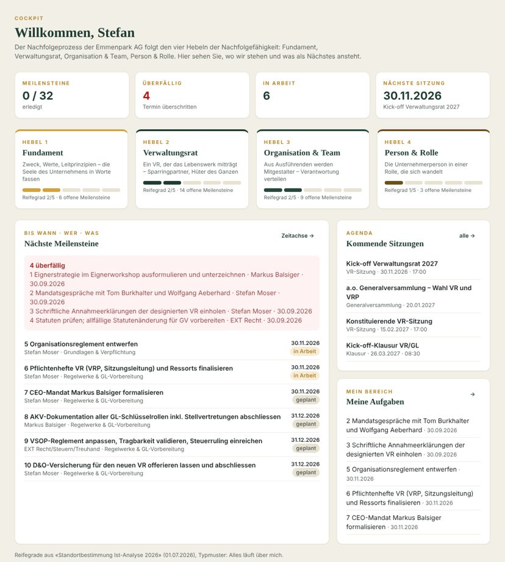
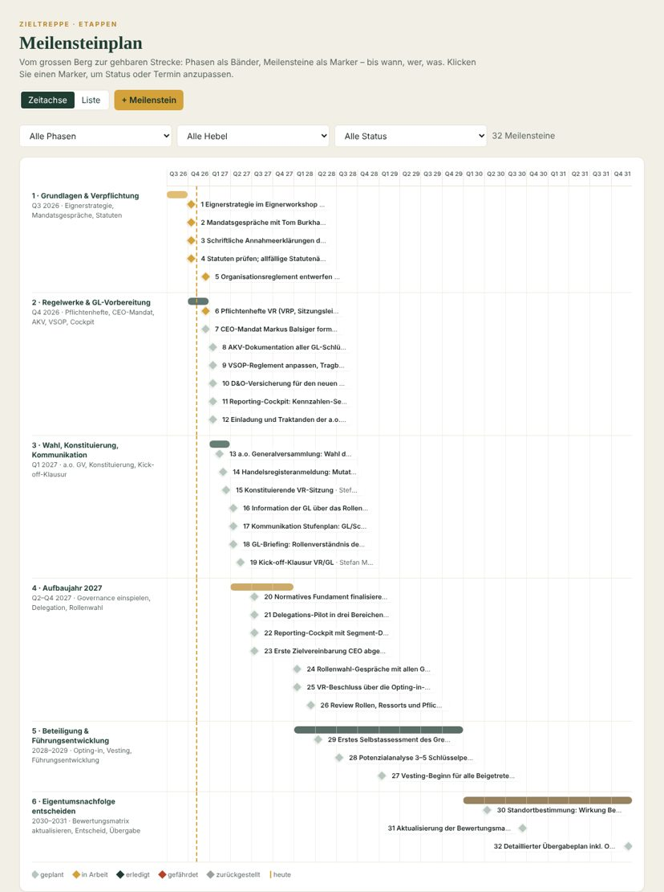
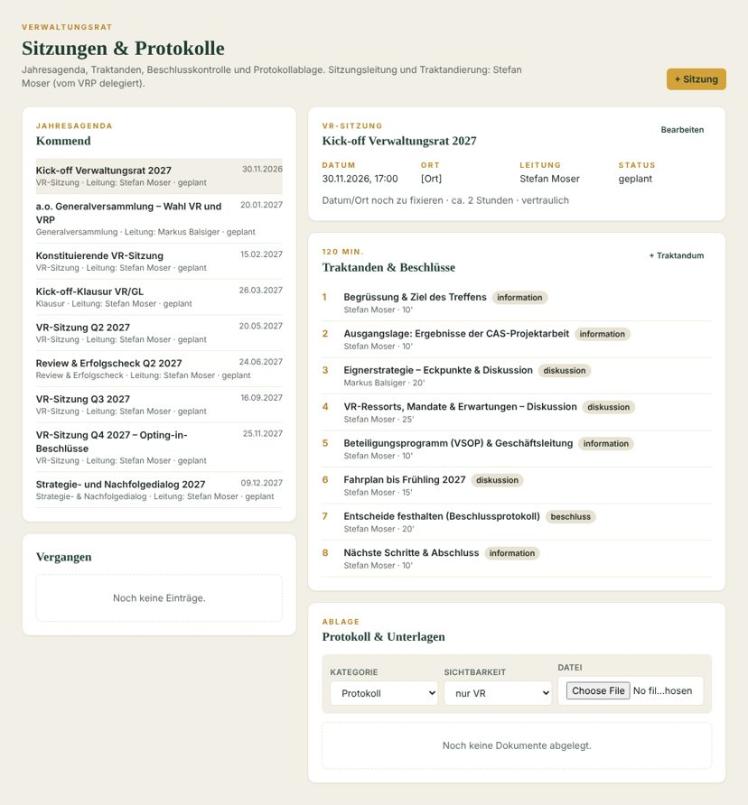
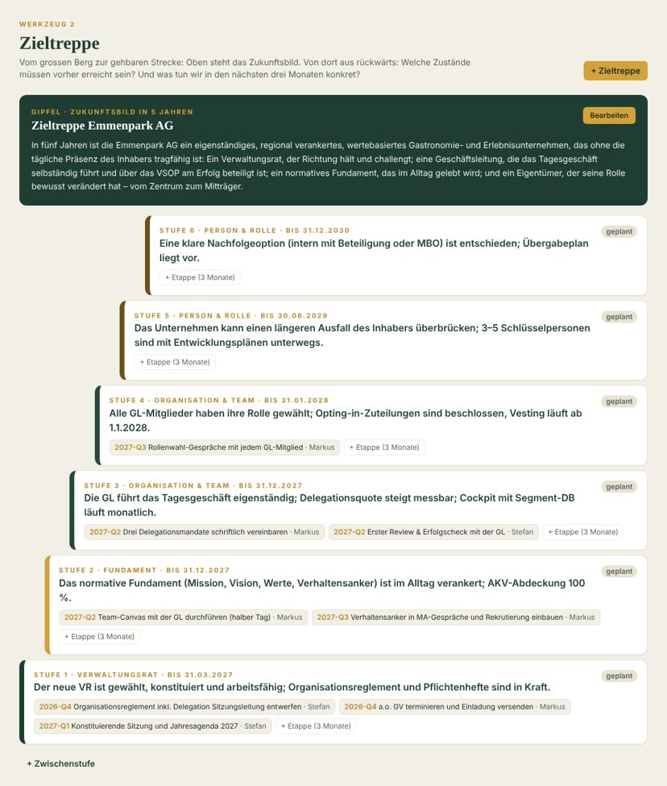
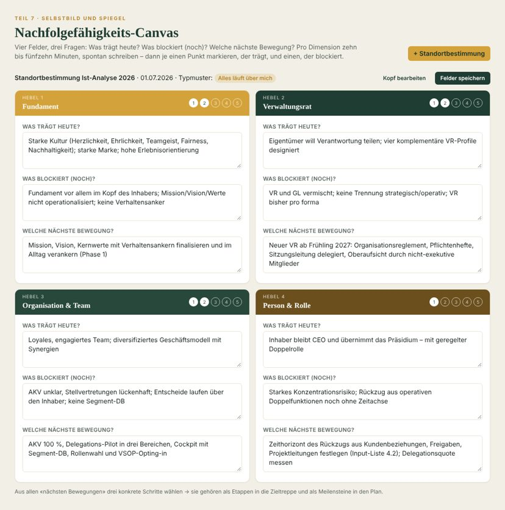
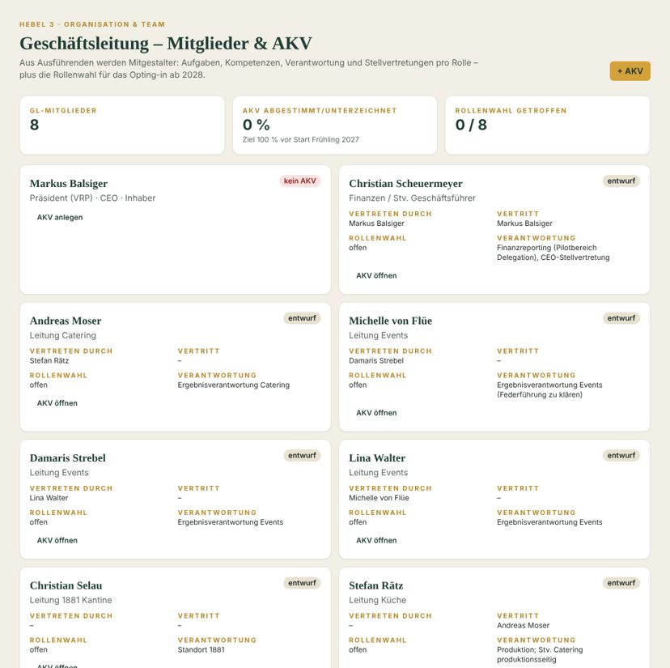
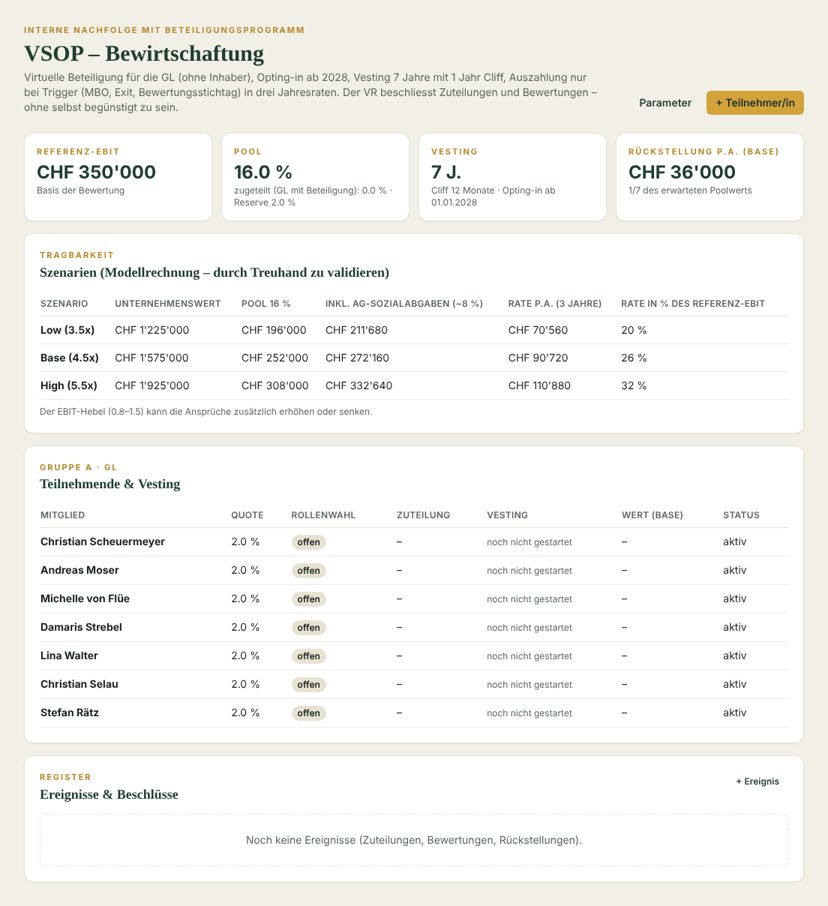
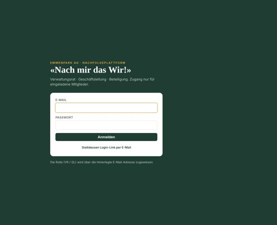
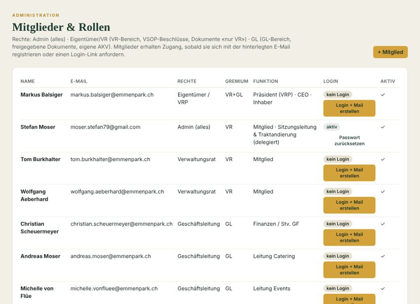

Idee, Funktionsumfang und Anleitung
Die Plattform begleitet den Nachfolgeprozess der Emmenpark AG über fünf Jahre – für den Verwaltungsrat, die Geschäftsleitung und das Beteiligungsprogramm. Sie folgt den vier Hebeln der Nachfolgefähigkeit und stellt die Instrumente aus dem Buch «Nachfolgefähig werden» als Arbeitsflächen zur Verfügung.
Die Emmenpark AG ist operativ stark und kulturell gut aufgestellt – aber strukturell noch nicht nachfolgefähig: Zu viel hängt an einer Person. Die CAS-Projektarbeit «Nach mir das Wir!» hat dafür ein normatives Fundament und einen strukturierten Nachfolgeprozess entworfen; die Eignerstrategie, der neue Verwaltungsrat ab 2027, die AKV der Geschäftsleitung und das VSOP-Beteiligungsprogramm setzen ihn um.
Die Plattform macht diesen Weg sichtbar, verbindlich und gemeinsam begehbar. Sie ersetzt keine Sitzungen und keine Gespräche – sie sorgt dafür, dass Verantwortung, Termine und Entscheide nicht im Tagesgeschäft versanden. Ihr Gerüst sind die vier Hebel der Nachfolgefähigkeit aus «Nachfolgefähig werden»:
Die Zugangsrechte hängen an der hinterlegten E-Mail-Adresse. Beim ersten Login wird das Konto automatisch mit dem Mitgliedsprofil und seiner Rolle verknüpft.
| Rolle | Wer | Rechte |
|---|---|---|
| Admin | Stefan Moser | Alles, zusätzlich Mitglieder- und Rollenverwaltung, Logins anlegen |
| Eigentümer / VRP | Markus Balsiger | Wie VR; zusätzlich persönliche Zieltreppe und persönlicher Canvas (Hebel 4) |
| Verwaltungsrat | Tom Burkhalter, Wolfgang Aeberhard | VR-Bereich (Sitzungen, Protokolle, Dokumente «nur VR», Finanz-Cockpit, Risiken), VSOP-Beschlüsse, alle Instrumente, GL-Bereich lesend und schreibend |
| Geschäftsleitung | Scheuermeyer, A. Moser, von Flüe, Strebel, Walter, Selau, Rätz | GL-Bereich, eigene AKV, für GL freigegebene Dokumente und Meilensteine, eigene Aufgaben und Pendenzen, GL-Instrumente (Team-Canvas GL, Reviews GL, Retrospektiven); im VSOP nur der eigene Datensatz |
| Bereich | Inhalt |
|---|---|
| Cockpit | Startseite: Reifegrad je Hebel, Kennzahlen zum Fortschritt, überfällige und nächste Meilensteine, kommende Sitzungen, eigene Aufgaben |
| Meilensteinplan | Zeitachse 2026–2031: Phasen als Bänder, Meilensteine als Marker mit Verantwortlichen; Listenansicht mit Filtern nach Phase, Hebel, Status |
| Mein Bereich | Eigene Meilensteine mit Status-Pflege, Pendenzen aus Sitzungen, persönliche Zieltreppe und persönlicher Nachfolgefähigkeits-Canvas |
| Verwaltungsrat | Sitzungen & Protokolle (Jahresagenda, Traktanden, Beschlüsse, Pendenzen, Ablage), Dokumentenablage, Finanz-Cockpit, Risiken |
| Instrumente | Zieltreppe, Team-Canvas, Nachfolgefähigkeits-Canvas, Review & Erfolgscheck, Retrospektiven, 12-Monats-Weg |
| Geschäftsleitung | GL-Mitglieder & AKV mit Stellvertretungsmatrix und Rollenwahl, Delegationsmandate, GL-Dokumente |
| Beteiligung | VSOP-Programm: Parameter, Szenarien, Teilnehmende, Vesting, Ereignisregister |
| Administration | Mitglieder, Rollen, Logins mit Startpasswort, Einladungsmail |

Der Plan übersetzt Fahrplan (Eignerstrategie Teil D) und Vorgehensplan in sechs Phasen mit 32 Meilensteinen – von «Grundlagen & Verpflichtung» (Q3 2026) bis «Eigentumsnachfolge entscheiden» (2030–2031). Jeder Meilenstein trägt Hebel, Verantwortlichen, Termin, Status und Sichtbarkeit.


Sitzungen anlegen (VR, Klausur, Review, Retro, GV, Strategie- und Nachfolgedialog), Traktanden mit Referent und Dauer erfassen – die Gesamtdauer wird angezeigt. Beschlüsse werden direkt am Traktandum festgehalten; Pendenzen mit Verantwortlichem und Termin erscheinen bei der Person unter «Mein Bereich» und lassen sich dort als erledigt markieren.
Dateien werden pro Sitzung oder in der zentralen Ablage hochgeladen (Kategorie: Protokoll, Reglement, Eignerstrategie, Finanzen, VSOP, Pflichtenheft, AKV …). Die Sichtbarkeit «nur VR / VR+GL / alle» gilt auch für den Datei-Download – ein GL-Mitglied kann eine VR-Datei weder sehen noch über einen Link öffnen.
Pro Periode: Nettoerlös, Bruttogewinn, Personalkosten, EBITA/EBIT, Reingewinn, Liquidität, EK-Quote, Verschuldung, Segment-Deckungsbeiträge sowie die Nachfolge-Indikatoren Delegationsquote und AKV-Abdeckung. Vergleich zur Vorperiode und zum Referenz-EBIT des VSOP (CHF 350'000). Die Erfolgsrechnung Jan–Okt 2024/2025 ist bereits erfasst.
Risiko-Review gemäss Eignerstrategie: Risiko, Frühindikatoren, Gegenmassnahmen, Verantwortlicher, Stufe und Status. Die sechs Risiken aus dem Vorgehensplan sind vorerfasst – inklusive der Personalunion VRP/CEO/Eigentümer.

| Instrument | Zweck | Rhythmus |
|---|---|---|
| Zieltreppe (Werkzeug 2) | Zukunftsbild in 5 Jahren → rückwärts die Zustände, die vorher erreicht sein müssen → konkrete Etappen von drei Monaten. Eine Treppe fürs Unternehmen (VR), persönliche Treppen unter «Mein Bereich». | Quartalsweise aktualisieren |
| Team-Canvas (Werkzeug 1) | Sechs Felder: Auftrag, Ziele, Rollen, Spielregeln, Risiken, Bedürfnisse – plus zwei bis drei Vereinbarungen für die nächsten drei Monate. Je eine Version für VR und GL. | Halbtägiger Workshop, Review nach 3 Monaten |
| Nachfolgefähigkeits-Canvas (Teil 7) | Vier Hebel × «Was trägt? Was blockiert? Welche nächste Bewegung?» mit Reifegrad 1–5 und Typmuster. Die Reifegrade speisen das Cockpit. | Jährliche Standortbestimmung |
| Review & Erfolgscheck (Werkzeug 3) | Drei Fragen: Was ist gelungen? Wo abgekommen – und warum? Was braucht es jetzt? Entscheide: fortführen, weglassen, neu probieren. | Alle drei Monate, 60–90 Min. |
| Retrospektive (Werkzeug 4) | Blick auf das Wie der Zusammenarbeit: Arbeitsabkommen, Check-in, Sammeln, Bündeln, Vertiefen, zwei bis drei Experimente. Moderation idealerweise nicht durch den Inhaber. | Alle 4–8 Wochen in der GL |
| 12-Monats-Weg | Automatische Pfadkarte: vier Quartale mit dem jeweiligen Schwerpunkt-Hebel, abgeleitet aus Meilensteinen und Zieltreppe-Etappen. | Laufend |


Pro GL-Mitglied Aufgaben, Kompetenzen, Verantwortung, Stellvertretung und der Abschnitt «Übernahme vom Geschäftsführer». GL-Mitglieder bearbeiten ihre eigene AKV; der VR setzt die Rollenwahl (Kader / GL ohne Beteiligung / GL mit Beteiligung) nach den Gesprächen im Aufbaujahr 2027. Die AKV-Abdeckung wird als Kennzahl geführt (Ziel 100 % vor Start).
Schriftliche Mandate für die drei Pilotbereiche Catering-Leitung, Projektleitung Events, Finanzreporting: Ziel, Budget, Entscheidungsspielraum, Reporting, Review-Termin, Lessons learned. Sie sind der Prüfstein, ob Verantwortung wirklich wandert.

VSOP-Bewirtschaftung. Referenz-EBIT CHF 350'000, Pool 16 %, 2 % pro Person, Vesting 7 Jahre mit 12 Monaten Cliff, Auszahlung in drei Jahresraten bei MBO, Exit oder Bewertungsstichtag. Die Szenarienrechnung zeigt Unternehmenswert, Poolwert inkl. Sozialabgaben, Jahresrate und deren Anteil am EBIT (Base: CHF 91'000 bzw. 26 %); die jährliche Rückstellung von rund CHF 36'000 wird ausgewiesen. Zuteilungen, Bewertungen, Rückstellungen, Trigger und Leaver-Ereignisse werden im Register festgehalten. Teilnehmende sehen nur ihren eigenen Datensatz.


| Rhythmus | Was | Wo in der Plattform |
|---|---|---|
| Wöchentlich (Aufbauphase) | Jour fixe Sitzungsleitung – PMO/CEO: operative Hürden | Mein Bereich, Meilensteinplan |
| Monatlich | Cockpit an den VR (Segment-DB), Review Delegationsmandate | Finanz-Cockpit, Delegationsmandate |
| Alle 4–8 Wochen | Retrospektive in der GL | Instrumente → Retrospektiven |
| Quartalsweise | VR-Sitzung mit Nachfolge als ständigem Traktandum; Review & Erfolgscheck; Zieltreppe-Update | Sitzungen, Reviews, Zieltreppe |
| Jährlich | Strategie- und Nachfolgedialog (moderiert), Nachfolgefähigkeits-Canvas, Risiko-Review, Selbstassessment VR, Bewertungsmatrix | Sitzungen, Canvas, Risiken |
| Einmalig 2027 | Rollenwahl-Gespräche, Opting-in-Beschlüsse per 1.1.2028, 12-Monats-Review der Governance | GL, VSOP, Meilensteinplan |